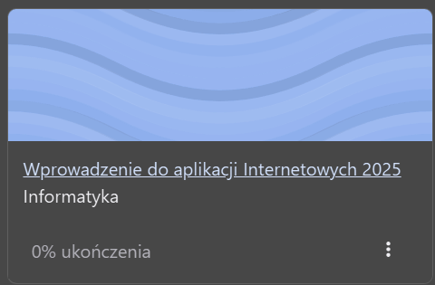

Studia
Jestem absolwentem kierunku Matematyka na AGH i obecnie studiuję na kierunku Informatyka - Artificial Intelligence & ML też na AGH.
Moim ulubionym przedmiotem jest Wprowadzenie do aplikacji Internetowych. (Zdjęcie jest trochę krzywo ale to dlatego że krzywo zrobiłem screenshota)

Jestem absolwentem kierunku Matematyka na AGH i obecnie studiuję na kierunku Informatyka - Artificial Intelligence & ML też na AGH.
Członek teamu który przeszedł do fazy finałowej podczas HackYeah (największego stacjonarnego hackatonu w Europie).
W wolnej chwili lubię grać w piłkę nożna, biegać i ogólnie aktywnie spędzać czas.